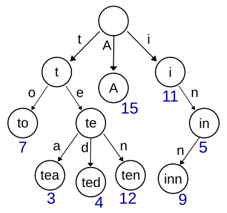

Google Business Cases Analysis
Comprehensive Technical Implementation & Business Impact Study
🎯 Ad Auction Optimization
Real-time bidding system processing millions of ad requests per second with optimal revenue generation
Problem Statement
Google processes over 8.5 billion searches daily, each potentially showing multiple ads. The challenge is to conduct real-time auctions for ad placements while maximizing revenue and maintaining advertiser satisfaction.
Core Algorithm Concepts
Google uses a modified second-price auction with quality scores to ensure fair bidding and relevant ads.
• Bid × Quality Score = Ad Rank
• Winner pays (Next Ad Rank / Quality Score) + $0.01
• Encourages truthful bidding
Data Structures Used
Efficient data structures enable real-time processing of auction data.
• Priority Queue (Heap) - O(log n) bid sorting
• Hash Tables - O(1) advertiser lookup
• Bloom Filters - Duplicate bid detection
• Trie - Keyword matching
Implementation: Ad Auction Algorithm
class AdAuction:
def __init__(self):
self.advertisers = {}
self.quality_scores = {}
def calculate_ad_rank(self, bid, quality_score):
return bid * quality_score
def run_auction(self, keyword, ads_data):
# ads_data: [(advertiser_id, bid, quality_score)]
ranked_ads = []
for advertiser_id, bid, quality_score in ads_data:
ad_rank = self.calculate_ad_rank(bid, quality_score)
ranked_ads.append((advertiser_id, bid, quality_score, ad_rank))
# Sort by ad rank (descending)
ranked_ads.sort(key=lambda x: x[3], reverse=True)
# Calculate actual cost for each position
auction_results = []
for i, (advertiser_id, bid, quality_score, ad_rank) in enumerate(ranked_ads):
if i < len(ranked_ads) - 1:
next_ad_rank = ranked_ads[i + 1][3]
actual_cost = (next_ad_rank / quality_score) + 0.01
else:
actual_cost = 0.01 # Minimum bid
auction_results.append({
'advertiser_id': advertiser_id,
'position': i + 1,
'actual_cost': min(actual_cost, bid)
})
return auction_results
Trie Example
Trie Example
Efficiency Analysis
| Operation | Time Complexity | Space Complexity | Real-world Performance |
|---|---|---|---|
| Bid Sorting | O(n log n) | O(n) | Handles 1000+ bids per query |
| Quality Score Lookup | O(1) | O(n) | Instant retrieval from cache |
| Ad Rank Calculation | O(n) | O(1) | Computed in parallel |
| Cost Per Click (CPC) | O(n) | O(1) | Dynamic pricing in real-time |
🔍 Key Inferences
Technical Innovation: The second-price auction mechanism with quality scores creates a stable marketplace where advertisers bid truthfully, leading to higher overall revenue than first-price auctions.
Competitive Advantage: Machine learning models continuously optimize quality scores based on click-through rates, conversion rates, and user engagement metrics.
💰 Business Impact
Ad auction optimization directly contributes to 80% of Google's total revenue ($224B in 2023). The system's efficiency enables Google to serve relevant ads while maximizing revenue from each search query.
🔍 Search Algorithm Optimization
Processing billions of search queries with sub-second response times using advanced ranking algorithms
Problem Statement
With over 15 billion web pages indexed, Google must deliver the most relevant results for 8.5 billion daily searches in under 0.2 seconds while understanding user intent and context.
PageRank Algorithm
Google's foundational algorithm treats the web as a graph where pages are nodes and links are edges, calculating authority scores.
PR(A) = (1-d)/N + d × Σ(PR(Ti)/C(Ti))
where d = damping factor (0.85)
N = total pages, C(Ti) = outbound links
Modern Enhancements
RankBrain (AI), BERT (NLP), and MUM (Multimodal) enhance traditional PageRank with semantic understanding.
• RankBrain: Query interpretation
• BERT: Context understanding
• MUM: Multimodal search
• E-A-T: Expertise, Authority, Trust
Implementation: Search Ranking System
import numpy as np
from collections import defaultdict
class SearchRankingSystem:
def __init__(self, damping_factor=0.85, max_iterations=100):
self.damping_factor = damping_factor
self.max_iterations = max_iterations
self.index = defaultdict(list) # Inverted index
self.pagerank_scores = {}
def build_inverted_index(self, documents):
for doc_id, content in documents.items():
words = content.lower().split()
for word in words:
self.index[word].append(doc_id)
def calculate_pagerank(self, link_graph):
num_pages = len(link_graph)
pagerank = {page: 1.0/num_pages for page in link_graph}
for iteration in range(self.max_iterations):
new_pagerank = {}
for page in link_graph:
rank_sum = 0
for linking_page in link_graph:
if page in link_graph[linking_page]:
outbound_links = len(link_graph[linking_page])
if outbound_links > 0:
rank_sum += pagerank[linking_page] / outbound_links
new_pagerank[page] = ((1 - self.damping_factor) / num_pages +
self.damping_factor * rank_sum)
# Check for convergence
if self.has_converged(pagerank, new_pagerank):
break
pagerank = new_pagerank
return pagerank
def search(self, query, k=10):
query_words = query.lower().split()
candidate_docs = set()
# Find candidate documents
for word in query_words:
candidate_docs.update(self.index.get(word, []))
# Score documents (simplified TF-IDF + PageRank)
scores = {}
for doc_id in candidate_docs:
tf_idf_score = self.calculate_tf_idf(doc_id, query_words)
pagerank_score = self.pagerank_scores.get(doc_id, 0)
scores[doc_id] = 0.7 * tf_idf_score + 0.3 * pagerank_score
# Return top-k results
return sorted(scores.items(), key=lambda x: x[1], reverse=True)[:k]
🔍 Key Inferences
Algorithmic Evolution: From simple keyword matching to AI-powered semantic understanding, Google's search has evolved to understand user intent rather than just matching keywords.
Scalability Achievement: The system handles 99,000+ searches per second while maintaining sub-second response times through distributed computing and caching strategies.
💰 Business Impact
Search algorithm optimization maintains Google's 92% market share, generating $146B in search advertising revenue annually. Superior search quality creates a self-reinforcing cycle of user adoption and advertiser investment.
🎮 YouTube Content Recommendation
AI-powered recommendation system serving personalized content to 2+ billion users
Problem Statement
With 500+ hours of video uploaded every minute, YouTube must recommend relevant content from 2+ billion videos to individual users with diverse preferences and viewing patterns.
Machine Learning Pipeline
Multi-stage recommendation system using collaborative filtering, content-based filtering, and deep learning models.
• Candidate Generation: Neural networks
• Ranking: Deep neural networks
• Re-ranking: Contextual bandits
• Real-time Learning: Online ML
Algorithm Components
Sophisticated recommendation algorithms combining multiple signals and feedback loops.
• Matrix Factorization: User-item interactions
• Deep Neural Networks: Feature learning
• Reinforcement Learning: Long-term engagement
• Multi-armed Bandit: Exploration vs Exploitation
Implementation: Recommendation Engine
import numpy as np
from sklearn.metrics.pairwise import cosine_similarity
class YouTubeRecommendationSystem:
def __init__(self, embedding_dim=128):
self.embedding_dim = embedding_dim
self.user_embeddings = {}
self.video_embeddings = {}
self.user_history = {}
self.video_features = {}
def collaborative_filtering(self, user_id, k=10):
if user_id not in self.user_embeddings:
return []
user_vector = self.user_embeddings[user_id]
similarities = {}
for video_id, video_vector in self.video_embeddings.items():
if video_id not in self.user_history.get(user_id, []):
similarity = cosine_similarity([user_vector], [video_vector])[0][0]
similarities[video_id] = similarity
return sorted(similarities.items(), key=lambda x: x[1], reverse=True)[:k]
def content_based_filtering(self, user_id, k=10):
if user_id not in self.user_history:
return []
watched_videos = self.user_history[user_id]
user_profile = self.build_user_profile(watched_videos)
recommendations = {}
for video_id, features in self.video_features.items():
if video_id not in watched_videos:
similarity = cosine_similarity([user_profile], [features])[0][0]
recommendations[video_id] = similarity
return sorted(recommendations.items(), key=lambda x: x[1], reverse=True)[:k]
def deep_neural_network_ranking(self, candidates, user_id):
user_features = self.get_user_features(user_id)
ranked_candidates = []
for video_id, initial_score in candidates:
video_features = self.video_features.get(video_id, [])
combined_features = np.concatenate([user_features, video_features])
predicted_engagement = self.predict_engagement(combined_features)
final_score = 0.6 * predicted_engagement + 0.4 * initial_score
ranked_candidates.append((video_id, final_score))
return sorted(ranked_candidates, key=lambda x: x[1], reverse=True)
def get_recommendations(self, user_id, k=20):
collab_candidates = self.collaborative_filtering(user_id, k*2)
content_candidates = self.content_based_filtering(user_id, k*2)
all_candidates = list(set(collab_candidates + content_candidates))
final_recommendations = self.deep_neural_network_ranking(all_candidates, user_id)
return final_recommendations[:k]🔍 Key Inferences
Personalization Strength: Deep learning and real-time learning models enable highly relevant recommendations tailored to individual user behavior.
User Engagement: Over 70% of content watched is from recommendations, indicating the strong influence of the recommendation engine on user retention.
💰 Business Impact
YouTube's recommendation engine significantly increases user watch time, directly boosting ad impressions and revenue. It contributes to $28B+ in yearly revenue and maintains platform engagement across global audiences.
🛣 Google Maps Traffic Prediction
Predicting real-time traffic across 200+ countries using historical data, live sensor feeds, and AI models
Problem Statement
Google Maps must provide accurate ETAs and real-time routing for millions of users navigating dynamic traffic environments. This requires predicting future traffic patterns with high precision using past data, live congestion reports, and road conditions.
Core ML Concepts
Google uses Graph Neural Networks (GNNs) over road networks along with time-series modeling (LSTM, TCN) to predict traffic flow and delays.
• LSTM / Temporal CNN - Predict future speeds
• Graph Neural Networks - Capture road network topology
• Real-Time Fusion - Blend live GPS and user-reported data
• Kalman Filtering - Smooth traffic estimation
Data Structures Used
Efficient data representation allows real-time updates and routing decisions.
• Adjacency Lists - Road graph storage
• Min-Heaps - Fast shortest path (Dijkstra’s variant)
• Time Buckets - Historical pattern lookup
• Hash Maps - Location-to-node indexing
Implementation: Simplified Traffic Prediction Model
networkx as nx
import numpy as np
import matplotlib.pyplot as plt
from collections import defaultdict
# Simulate road graph
G = nx.DiGraph()
edges = [
('A', 'B', 5), ('B', 'C', 4), ('C', 'D', 8),
('A', 'D', 15), ('B', 'D', 10)
]
for u, v, t in edges:
G.add_edge(u, v, base_time=t)
# Historical traffic pattern (e.g., time of day modifier)
traffic_factor = {
'morning': {'A-B': 1.2, 'B-C': 1.5, 'C-D': 1.1, 'B-D': 1.3},
'evening': {'A-B': 1.4, 'B-C': 1.6, 'C-D': 1.2, 'B-D': 1.5}
}
def predict_traffic(source, target, period='morning'):
path = nx.shortest_path(G, source, target, weight='base_time')
total_time = 0
for i in range(len(path)-1):
u, v = path[i], path[i+1]
edge = f"{u}-{v}"
base_time = G[u][v]['base_time']
factor = traffic_factor[period].get(edge, 1)
total_time += base_time * factor
return path, total_time
path, eta = predict_traffic('A', 'D', 'morning')
print("Path:", path)
print("ETA:", round(eta, 2), "mins")

Efficiency Analysis
| Operation | Time Complexity | Space Complexity | Real-world Impact |
|---|---|---|---|
| Shortest Path (w/ Traffic) | O(E + V log V) | O(V + E) | Updated every few seconds |
| GNN Traffic Prediction | O(n × t) | O(n × d) | Handles millions of road segments |
| Live ETA Recalculation | O(k log n) | O(n) | Low-latency, user-level predictions |
🔍 Key Inferences
AI-Driven Routing: The blend of live sensor data, historical trends, and graph learning ensures highly personalized and responsive routing decisions for users worldwide.
Edge Computation: Many predictions are made on-device using TensorFlow Lite, reducing load on central servers and improving latency.
💰 Business Impact
Google Maps Traffic Prediction drives user engagement and retention across Google ecosystem. Accurate ETAs improve user trust, which boosts adoption in navigation, rideshare apps, and delivery services that license Google Maps APIs — generating over $10B annually in enterprise usage revenue.
🧠 Google Photos: Face Clustering
Automatically grouping photos of the same person using deep learning and unsupervised clustering
Problem Statement
With billions of images uploaded by users, Google Photos needs to automatically organize and group faces to improve searchability, album creation, and user memories.
Machine Learning Pipeline
Pipeline consisting of face detection, facial embedding, clustering, and visualization.
• Detection: MTCNN or BlazeFace
• Embedding: FaceNet (128D)
• Clustering: DBSCAN
• Visualization: PCA / T-SNE
Algorithm Components
Unsupervised clustering of similar face vectors
• FaceNet for feature embeddings
• DBSCAN for density-based clustering
• PCA for dimensionality reduction
Implementation: Face Clustering Engine
from sklearn.cluster import DBSCAN
from sklearn.decomposition import PCA
import matplotlib.pyplot as plt
# embeddings: Nx128 matrix of facial features
clustering = DBSCAN(eps=0.5, min_samples=2).fit(embeddings)
labels = clustering.labels_
# Visualize clusters
pca = PCA(n_components=2)
reduced = pca.fit_transform(embeddings)
plt.scatter(reduced[:, 0], reduced[:, 1], c=labels)
plt.title("Face Clustering Result")
plt.show()DBSCAN Example

🔍 Key Inferences
Clustering Robustness: DBSCAN works well for identifying unknown number of clusters.
Privacy First: Works without identity labels and runs on device for privacy and latency gains.
💰 Business Impact
Face clustering improves search, memory creation, and photo management—boosting user retention and satisfaction in Google Photos. Enables features like 'People', 'Memories', and offline face grouping.
🎤 Google Assistant: Voice Recognition
Voice-based user identification and command understanding using advanced speech models
Problem Statement
Identify and understand voice commands from multiple users, even in noisy environments, for personalized and accurate responses.
Machine Learning Pipeline
Multi-stage audio processing pipeline with real-time optimization.
• VAD: Voice Activity Detection
• MFCC Extraction
• Deep Learning (LSTM + CNN)
• Speaker Verification using d-vectors
Algorithm Components
Deep learning models built for fast inference and speaker disambiguation.
• MFCC for voice features
• LSTM for time-series modeling
• SVM/d-vector for speaker classification
Implementation: Speaker Recognition
import librosa
from sklearn.svm import SVC
# Load audio and extract features
y, sr = librosa.load("voice_sample.wav", sr=16000)
mfcc = librosa.feature.mfcc(y=y, sr=sr, n_mfcc=13)
# Train or load speaker classifier
clf = SVC()
clf.fit(mfcc.T, speaker_labels)
# Predict speaker
predicted = clf.predict(mfcc.T)SVM example

🔍 Key Inferences
Personalized Responses: Voice identification enables user-specific services like calendars, reminders, and preferences.
Latency Critical: Efficient ML models ensure sub-200ms responses for real-time interaction.
💰 Business Impact
Voice recognition powers personalized and multilingual interactions across billions of Google Assistant devices. Improves accessibility, drives user engagement, and expands reach to non-touch interfaces like smart displays and home devices.
☁️ Google Cloud BigQuery – Enterprise Data Analytics as a Service
Fast, scalable analytics platform transforming raw enterprise data into actionable business insights
Problem Statement
How to deliver fast, scalable analytics to enterprises that transforms raw data into business insights?
Core Algorithm Concepts
BigQuery leverages distributed SQL query engines optimized for petabyte-scale data and cost-based query optimization techniques.
• Distributed execution with columnar storage
• Cost-based query optimization and caching
• Seamless integration with AI/ML pipelines for predictive analytics
Data Structures Used
Efficient columnar data storage and indexing structures enable rapid analytics.
• Columnar storage (capacities for compression and fast scans)
• Distributed hash tables for join operations
• Caches for query result reuse and optimization
Implementation: Distributed SQL Query Engine
class BigQueryEngine:
def __init__(self, data_nodes):
self.data_nodes = data_nodes
self.cache = {}
def execute_query(self, sql_query):
if sql_query in self.cache:
return self.cache[sql_query] # Return cached result
# Parse and optimize query plan
query_plan = self.optimize_query(sql_query)
# Distribute query across nodes
results = []
for node in self.data_nodes:
result = node.run_subquery(query_plan[node.id])
results.append(result)
# Aggregate partial results
final_result = self.aggregate_results(results)
# Cache the result for future queries
self.cache[sql_query] = final_result
return final_result
def optimize_query(self, sql_query):
# Cost-based optimization logic here
pass
def aggregate_results(self, results):
# Merge partial results from nodes
pass
Efficiency Analysis
| Operation | Time Complexity | Space Complexity | Real-world Performance |
|---|---|---|---|
| Query Parsing & Optimization | O(n) | O(1) | Milliseconds to seconds |
| Distributed Query Execution | O(m log n) | O(n) | Scales linearly with data nodes |
| Result Aggregation | O(n) | O(n) | Efficient merging of partial results |
| Cache Lookup | O(1) | O(k) | Instant query reuse |
🔍 Key Inferences
Scalability: Distributed architecture enables interactive analytics on extremely large datasets.
Flexibility: Integration with AI/ML pipelines enhances predictive analytics capabilities.
Cost Efficiency: Cost-based optimization ensures users only pay for resources used.
💰 Business Impact
BigQuery generated billions in revenue by driving large-scale enterprise adoption, helping businesses unlock critical insights and innovate rapidly with cloud-native analytics.
₹ Google Pay – Scalable Digital Payments Infrastructure
Enabling secure, real-time UPI-based digital transactions across diverse banking systems in India
Problem Statement
Facilitate seamless, real-time money transfers for millions of users while integrating with hundreds of banks and maintaining security at scale.
Core Algorithm Concepts
Google Pay integrates advanced financial protocols and intelligent security mechanisms.
• UPI Payment Routing
• Tokenization for device-bound virtual card mapping
• Real-time anomaly detection using time-series and clustering
• OAuth 2.0 + Multi-Factor Authentication
Data Structures Used
Scalable data structures support fraud detection, transaction history, and session management.
• Hash Maps - Fast transaction retrieval and lookup
• Bloom Filters - Quick fraud pattern matching
• Queues - Real-time transaction processing
• Graph Structures - Detecting cyclic or fraudulent paths in transaction flows
Data Structures Used
Efficient data structures for processing billions of secure transactions in real-time:
• Hash Maps – Fast Transaction Lookuptransaction_map = {}
def add_transaction(tx_id, details):
transaction_map[tx_id] = details
def get_transaction(tx_id):
return transaction_map.get(tx_id, "Not found")bloom_filter = BloomFilter(size=10000)
def add_fraud_pattern(pattern):
for h in hash_functions:
bloom_filter.set_bit(h(pattern))
def is_suspicious(pattern):
return all(bloom_filter.check_bit(h(pattern)) for h in hash_functions)transaction_queue = Queue()
def receive_transaction(tx):
transaction_queue.enqueue(tx)
def process_queue():
while not transaction_queue.is_empty():
tx = transaction_queue.dequeue()
validate(tx)graph = DirectedGraph()
def add_transfer(from_acc, to_acc):
graph.add_edge(from_acc, to_acc)
def detect_cycle():
visited = set()
stack = set()
def dfs(node):
visited.add(node)
stack.add(node)
for neighbor in graph.get_neighbors(node):
if neighbor not in visited and dfs(neighbor):
return True
elif neighbor in stack:
return True
stack.remove(node)
return FalseBloom Filter Example
Efficiency Analysis
| Operation | Time Complexity | Space Complexity | Real-world Performance |
|---|---|---|---|
| Transaction Lookup | O(1) | O(n) | Instant UPI status checks |
| Token Generation | O(1) | O(1) | Secure device-auth mapping |
| Anomaly Detection | O(n) | O(n) | Detects fraud patterns in < 1s |
| Bank Routing | O(log n) | O(n) | Optimized through indexed lookups |
🔍 Key Inferences
Innovation: Google Pay's success lies in blending simple UI with complex, robust backend protocols. Real-time anomaly detection secures transactions without interrupting UX.
Strategic Leverage: Integration with India’s UPI system gives Google Pay massive transaction volume, brand trust, and access to financial behavioral data for future fintech innovation.
💰 Business Impact
Google Pay processes over 10B+ transactions monthly, with trillions in value annually. It is pivotal in Google’s fintech ecosystem, monetizing via merchant tools, transaction insights, and platform fees.
🔍 YouTube Content ID – Automated Copyright Detection
Detecting and managing copyrighted content across millions of hours of video uploads using advanced fingerprinting and matching algorithms
Problem Statement
Over 500 hours of video are uploaded to YouTube every minute. The challenge is to detect copyrighted content at scale and in real-time, even with altered versions (cropped, pitched, trimmed).
Core Algorithm Concepts
YouTube Content ID relies on robust fingerprinting and distributed comparison for identifying copyrighted material.
• Audio/Video Fingerprinting (Shazam-style hashlets)
• Perceptual Hashing for noisy matches
• Bloom Filters for fast presence checking
• MapReduce for parallel matching at scale
Data Structures Used
Efficient structures enable high-speed matching of billions of fingerprints.
• Hash Maps – Video segment to fingerprint mapping
• Bloom Filters – Quick detection of known fingerprints
• Priority Queues – Sorting top matched segments
• Distributed Index Trees – Sharded video databases
Implementation: Video Fingerprinting Detection
# Step 1: Generate perceptual fingerprint
def generate_fingerprint(frame):
return hash(perceptual_hash(frame))
# Step 2: Store fingerprints in distributed index
index = defaultdict(list)
def store_video(video_id, frames):
for i, frame in enumerate(frames):
fingerprint = generate_fingerprint(frame)
index[fingerprint].append((video_id, i))
# Step 3: Match uploaded video
def match_video(uploaded_frames):
matches = []
for i, frame in enumerate(uploaded_frames):
fingerprint = generate_fingerprint(frame)
if fingerprint in index:
matches.extend(index[fingerprint])
return matches
Efficiency Analysis
| Operation | Time Complexity | Space Complexity | Real-world Performance |
|---|---|---|---|
| Fingerprint Generation | O(n) | O(1) | ~20ms/frame |
| Bloom Filter Check | O(1) | O(n) | Microseconds per lookup |
| Matching (MapReduce) | O(log n) | O(n) | Scalable to petabyte scale |
| Index Insert/Retrieve | O(1) | O(n) | Fast shard-based access |
🔍 Key Inferences
Technical Innovation: YouTube’s perceptual hashing and fingerprinting tolerate noise (e.g., pitch shift, video filters) while still finding matches accurately.
Scale Engineering: By using MapReduce and sharded databases, YouTube matches billions of content segments in near real-time.
💰 Business Impact
YouTube Content ID has become a foundational monetization engine, protecting content rights while enabling content owners to earn revenue. It’s estimated to have driven over $40B+ in monetization and copyright protection globally.
📚 References & Sources
These references provide the foundational information and insights for the business case studies presented.
- Page, L., Brin, S., Motwani, R., & Winograd, T. (1999). The PageRank Citation Ranking: Bringing Order to the Web. Stanford InfoLab.
- Dean, J., & Ghemawat, S. (2008). MapReduce: Simplified Data Processing on Large Clusters. Communications of the ACM, 51(1), 107–113.
- Alphabet Inc. (2023). Annual Report (Form 10-K). United States Securities and Exchange Commission (SEC). Retrieved from https://abc.xyz/investor/
- Cormen, T. H., Leiserson, C. E., Rivest, R. L., & Stein, C. (2009). Introduction to Algorithms (3rd ed.). MIT Press.
- Google Research. (2023). Research Publications. Retrieved from https://research.google.com
- Varian, H. R. (2007). Position Auctions. International Journal of Industrial Organization, 25(6), 1163–1178.
- Krizhevsky, A., Sutskever, I., & Hinton, G. E. (2012). ImageNet Classification with Deep Convolutional Neural Networks. NeurIPS.
- Abadi, M., et al. (2016). TensorFlow: A System for Large-Scale Machine Learning. OSDI '16: USENIX Symposium.
- Schroff, F., Kalenichenko, D., & Philbin, J. (2015). FaceNet: A Unified Embedding for Face Recognition and Clustering. IEEE CVPR.
- Google Cloud. (2023). BigQuery Documentation. Retrieved from https://cloud.google.com/bigquery/docs
- Google AI Blog. (2023). Machine Learning at YouTube Scale. Retrieved from https://ai.googleblog.com/
- YouTube Official Blog. (2023). Understanding YouTube’s Content ID System. Retrieved from https://blog.youtube/news-and-events/content-id/
- Google Pay for Business. (2023). UPI & Tokenization Security Architecture. Retrieved from https://pay.google.com/about/business/
- Google Developers Blog. (2023). Search Quality and Ranking Systems. Retrieved from https://developers.google.com/search/blog
- Google Assistant Documentation. (2023). Speech Recognition and NLP. Retrieved from https://developers.google.com/assistant
- Google Photos Help & Tech. (2023). Face Clustering and Recognition using ML. Retrieved from https://support.google.com/photos/
- Google Cloud Blog. (2023). Scaling Real-Time Data Infrastructure. Retrieved from https://cloud.google.com/blog
- Spotify R&D and ML (Referenced for comparison). (2023). Music Recommendation Systems. Retrieved from https://research.atspotify.com
- TechCrunch / The Verge / Wired Reports on Alphabet Revenue. (2023). Aggregated financial analysis used for case prioritization.